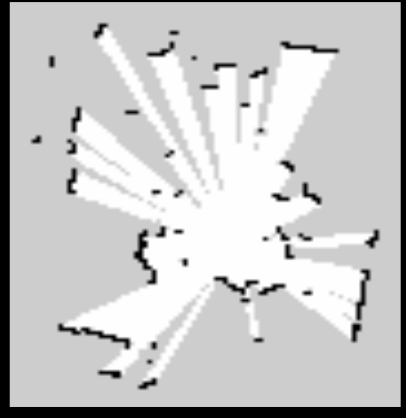
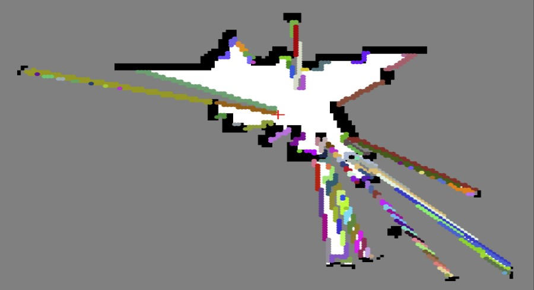
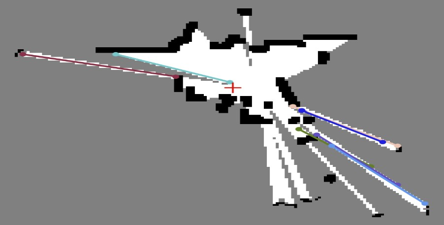
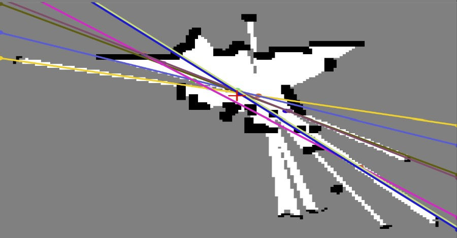

Our final project is focused on using the Mini Pupper robot to implement SLAM (Simultaneous Localization and Mapping). The goal is to enable the robot to autonomously navigate and map its environment, enhancing its capability to perform complex tasks. Below, you'll find detailed information about our proposal, demo videos, and updates on our progress.
Our final project proposal is to use the Mini Pupper robot to map a room using SLAM. Mapping and localization is an important problem to solve for many robotic systems. Giving the Mini Pupper the ability to localize itself and map its surroundings would further its capabilities of performing more complicated tasks autonomously.
We gave a presentation intended to pitch our idea to our professor and to further investigate the tools we intend to use for the project. We've decided on the Mini Pupper robot for our SLAM system. We are using ROS to give us more SLAM capabilities and access to twist commands for more accurate robot movement. For hardware, we are using a innomaker LiDAR unit and the existing servos on the Pupper. Rviz is used to visualize the LiDAR data.
Here are some videos related to our proposal:
This video demonstrates the keyboard simulation for the Mini Pupper. In this simulation, we show how the keyboard can be used to control the Mini Pupper's movements, which is essential for our mapping tasks. We utilize RViz as part of the simulation to visualize the LiDAR data and ensure accurate mapping of the room. This setup allows us to manually guide the Mini Pupper through the environment, collecting data for the SLAM system to create a detailed map.
This video showcases our ability to map a simulation environment for the Mini Pupper. Using ROS 2 and Gazebo, which is a robot simulation environment, we were able to interact with and control the Mini Pupper. Gazebo can be used independently or integrated with ROS 2 using a set of packages. In this simulation, we utilized keyboard commands embedded within ROS 2 to control the robot and map its surroundings. The visualized map is displayed using RViz, demonstrating our progress in achieving accurate mapping through simulation.
This video was created for fun to demonstrate the Mini Pupper running in circles. Using RViz, we recorded the simulation of the Mini Pupper executing circular movements. Once completed, we put the robot into a continuous loop, showcasing its ability to perform repetitive tasks accurately within the simulated environment. For fun, we used it as a loading screen.
Our initial demo involved setting up the Mini Pupper and running a simple "Hello World" program to ensure all components were functioning correctly.
We presented our initial findings and progress, focusing on the setup process and initial tests of the Mini Pupper.
Here are some update videos showcasing our progress:
This video demonstrates the keyboard simulation on the Mini Pupper. In this simulation, we show how the keyboard can be used to control the Mini Pupper's movements, which is essential for our mapping tasks. This setup allows us to manually guide the Mini Pupper through the environment, collecting data for the SLAM system to create a detailed map.
Although the goal for projects by this point is to use the real pupper, testing steps are always important to consistent progress to larger goals.
Considering my background in software I wanted to do something more complex that would move the team torward the goal (via movement) and demo how
movement can work for my teammates who also had personal assignments. When I thought of interesting dead reckoning movement schemes my mind went to
the classic DVD logo. It bounces off of walls that are arbitrarily large. As long as drift isn't too bad (spoiler, it was) the dvd logo could bounce around
for awhile. Admitedly I was ambitious in setting my stretch goal of integrating the lidar we had not yet received.
The video shown above shows the classic dvd logo (created in Python) which simulated how many steps can be taken before a wall is hit and then the pupper simulated
to show what the pupper would look like bouncing off of said walls. A simulation approach was taken in order to minimize potential problems on the pupper before they
were necessary. This is a classic example of turning one problem into another. Instead of the pupper handling its environment as it enteracts with it, a contained
simulation of a completely different object is used with its own rules. The results of those rules are reflected by the pupper when it takes action.
It should be noted that the video is running at 2x speed for compression and reader retension.
The concept for the pupper demo above was mostly described in the previous excerpt. Due to work space there is audio from my roommates. I chose to leave it in for entertainment as well as for the pupper movement noises. Although the simulation is not shown, the actions were mostly correct. The bounding box for the dvd logo was made much smaller, which helped with the deviation. There are a couple points where it seems to avoid collision with real life objects, but those are actually just pure coincidence. The biggest struggles for this project were finding the teleop_twist_keyboard.py file, /opt/ros/humble/lib/python3.10/site-packages/teleop_twist_keyboard.py, which I had to rip grep for and time (3 days).
This artifact was used to further the team's end-of-term project. Using the ROS 2 repository with the Mini Pupper, the team used a provided program. The team's goal with the project was to generate a map using SLAM on the Mini Pupper. This potentially enhanced the movement of the Mini Pupper, introducing more movements for each servo of the robot. The Mini Pupper performed a series of movements and created a dance routine along with a song. This artifact uses Colcon build to rebuild new packages of ROS 2.
This artifact was used to further the team's end of term project. Using ROS2 repository with the Mini Pupper had the team use a provided program to manually control the robot using a computer keyboard. The team's goal with the project was to generate a map using SLAM on the pupper. This would potentially require the pupper to turn a certain amount. The artifact had modified that provided code to turn the Mini Pupper 90 degrees in either the clockwise or counter directions. This will better enable the team to move the robot and generate SLAM maps. Leading the team forward to attempt developing autonomous movement to generate additional area maps.
My goal for this project was to figure out how to efficiently move and turn the Mini Pupper after the recent update to run it using ROS. Based on a movement program for twist commands in the existing Mini Pupper ROS repository, I created my own that had the robot move forward, turn 180 degrees, and then return to its starting position. The robot was fairly stable and consistent going forward, but I did have some difficulty turning the robot exactly 180 degrees as is apparent in the video. I found there was a decent amount of variability in how much the Mini Pupper would turn each time while running the same program. I hope to be able to develop a more robust system for turning later on.
This video demonstrates the LiDAR module in ROS 2. The Mini Pupper is mounted with a MANGDANG STL-06P LiDAR module, which performs well as intended. The LiDAR system uses laser pulses to measure distances to surrounding objects, creating a detailed 2D map of the environment. The video shows lines of different colors signifying various objects detected by the LiDAR. The darker the color, the more likely it is recognized as a solid object. This color coding helps in distinguishing between different types of objects and understanding their solidity. The LiDAR data is visualized in RViz, a 2D visualization tool for ROS, which allows us to see the environment from the robot's perspective and ensures accurate mapping and obstacle detection.
In this demo, we focused on improving the accuracy of the robot's movements and integrating more sensors.

For the first demo, we attempted to solidify the LiDAR integration with the Mini Pupper to generate a map outside of a simulation. We explored two approaches for integrating the LiDAR: initially reviewing and utilizing the existing Mini Pupper SLAM documentation to begin generating maps, and subsequently attempting to modify or develop our own SLAM implementation to achieve better control over the mapping process. The resulting map demonstrates the Mini Pupper's ability to accurately navigate and map its environment. By integrating additional sensors and refining the robot's movements, we were able to create a detailed and accurate representation of the room.
Our final demo showcases the complete implementation of the SLAM system on the Mini Pupper, including navigation.
The presentation shown below is the last update on the project done before the class. As such there is reflective content with a bent toward finality. Any further work was optional.
There are a few things to note about the video above.
Regardless of the setbacks, the 4 days that led up to this video were insane. A ton of effort and brainstorming was put in to find clever out of the box ways of circumventing our lack of ros2 knowledge, challenges the pupper put up, and how to make something presentable so we could finish the assignment. Luckily after spending most of the term working on ros2 a method clicked and all that was left was to just do it. We found the problems and tackled them one by one.
After many hours of work in the ros environment, optimizing some of the ros launch files, editing the rviz settings to more closely match our aesthetic needs
I realized that I was not going to be able to finish the project entirely in ROS. I just have too little knowledge about making my own ros packages to utilize
ros to any inteligable extent. A thought popped into my head, what if we did not have to finish the project in ros.
Callen Sun (a developer at MangDang) had published a new readme as well as some cleanup for some of the launch files the morning of this thought process. In that
updated readme was a method for converting an occupancy to a .pgm (a file). Pgm files can be read trivially by imageio. John worked with them in ROB 456 for
simulated pathfinding. The following methods would be needed to bridge the gap between what ros2 and our full project description.
There were some caviots that needed to be addressed early. If any of the following were not to work the idea would need to be rethought.
John tackled the first problem immidiately. It turns out that subprocessing.Popen opens its own terminals. Since each terminal is unique, commands like jobs and kill %1
will not work. Luckily launching popen is a threaded process and therfore I can use things like wait and time.sleep to ensure the criteria I am looking for in the external
program are met.
As exhilarating as problem one was to solve, problem two was in a class of its own. Problem two was as beautiful in its simplicity as it was in its aesthetic.
There is a map.yaml file, but without an imu, the cordinates for the pupper are incorrect (even when standing still). Fortunately a common artifact of lidars are the diagonals that appear to point toward the pupper (as that's where the lasers originated).
If the region between free space and unknown is converted into groups the groups could be colored unique colors to make them human readible.
Larger groups could then be converted into lines.

Given the beginning and the end, m and b can be calculated for y=mx+b. If the map is stepped through at small enough x steps every intersection can be found. The average
of the intersections should be the robot position (marked by the red cross shown in all 4 images). Unfortunately this is not perfect. Boring torain can cause fewer lines.
Worse, a small area may result in no lines, which would result in no pupper location.
Finally, the third problem was actually not an issue. A couple weeks ago Afreez (developer at Mangdang) had suggested lowering the pupper to lower the center of mass.
This resulted in less ground kicking and a lower chance of tipping over.
The observant reader will notice that by solving these problems take_snapshot and part of where_am_i were solved above. Finding where the pupper is in a lidar reading is only part of the answer. The next step would be to use the landmarks and expected location to match up with the rest of the room's map. Fortunately, for demo 2 (pathfind to a selected location) we only needed a single lidar scan. where_is_good and get_path were able to be easily modified for our lidar maps. Now that all of these pieces were together, we combined them in the teleop_twist_keyboard which controls the movement of the pupper via keyboard. John added a space button and a g button so that the keyboard kept part of its original functionality. Tapping space results in a snapshot and g says to go toward a targeted location. Some measured runs were used to calculate unit conversion.
The culmination of this work resulted in the video below.
Note this is the same video shown in the previous tab.